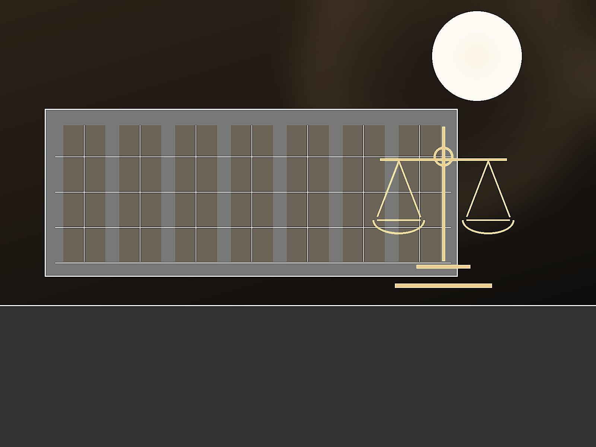

Necesitas asistencia legal inmediata?
Comunicate directamente, las 24 horas.
Llamanos ahora099 813 012 Consultar ahoraMás de 20 años de trayectoria
Defensa penal, accidentes de tránsito, derecho laboral y urgencias legales con atención directa en Maldonado.
Asistencia para situaciones que requieren respuesta jurídica inmediata.
Orientación y acompañamiento para ordenar los pasos posteriores.
Análisis de conflictos laborales y alternativas posibles.
Contacto directo ante asuntos que no pueden esperar.
Explicacion clara antes de tomar decisiones relevantes.
Comunicación responsable durante cada etapa.

Comunicate directamente, las 24 horas.
Llamanos ahora099 813 012 Consultar ahoraSituaciones concretas
En una urgencia legal, lo importante es explicar que ocurrio y recibir una orientación inicial clara.
Las urgencias legales se atienden durante las 24 horas.
Contar mi situacionSobre nosotros
El Dr. Claudio Rodriguez La Cruz trabaja con un enfoque claro, responsable y cercano para acompañar situaciones legales sensibles. La prioridad es ordenar la información, explicar los próximos pasos y sostener una comunicación directa durante la gestión.
Conoce como trabajamosContacto claro con el profesional que analiza la situación.
Disponibilidad para urgencias legales y consultas prioritarias.
Análisis responsable para avanzar con mayor seguridad.
Profesional a cargo
La consulta se coordiná con atención directa del profesional responsable, para ordenar el caso desde el primer contacto.
Te acompanamos paso a paso con un enfoque claro y profesional.
Escuchamos tu situacion para conocer el punto de partida.
Identificamos la documentacion y las opciones disponibles.
Te explicamos con claridad los proximos pasos posibles.
Avanzamos manteniendo una comunicacion responsable.

Experiencias reales
Altamente recomendado. Muy amable y con asesoramiento completo 24 horas.
Es un placer visitar el estudio del Dr. Rodriguez. Un apoyo de 10 puntos, muy recomendable. Maldonado cuenta con un abogado muy profesional.
Excelente profesional y mejor consejero. Muy recomendable.
Muy buena atención y disposicion.
Excelente atención y muy dispuesto a solucionar todos los problemas.
Excelente profesional.
Muy eficiente y humano.
Muy comprometido con su trabajo.
Preguntas frecuentes
Informacion practica para dar el primer paso con mayor claridad.
Tenes otra pregunta? LlamanosPodés llamar o escribir por WhatsApp al 099 813 012. Si es una urgencia, indica brevemente que ocurrio.
Si. La comunicación del estudio informa atención para urgencias legales las 24 horas.
Toda citacion, denuncia, constancia, contrato, mensaje o documento vinculado al asunto.
Su comunicación destaca defensa penal, accidentes de tránsito, derecho laboral y asesoramiento jurídico general.
En Román Guerra, Maldonado. Conviene coordinar previamente la consulta.
No. La información inicial ayuda a coordinar; el análisis del caso requiere una consulta profesional.
Ubicacion
Un punto de atencion para coordinar tu consulta y acercar la documentacion necesaria.